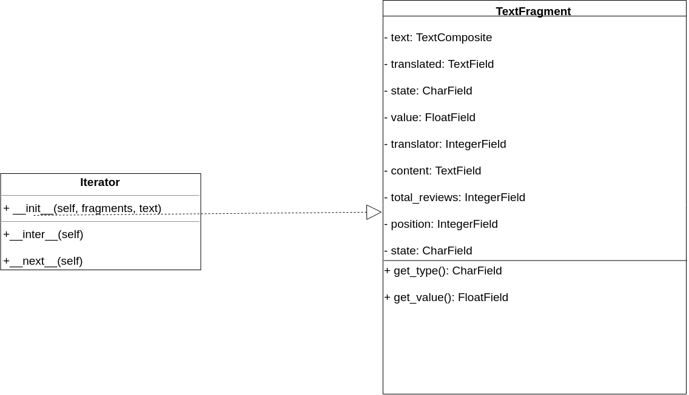
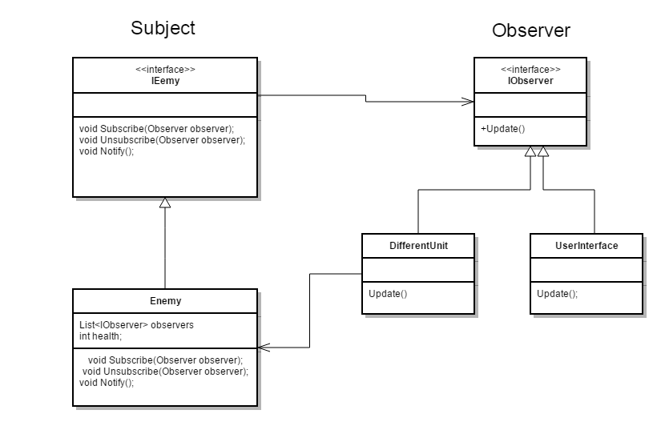
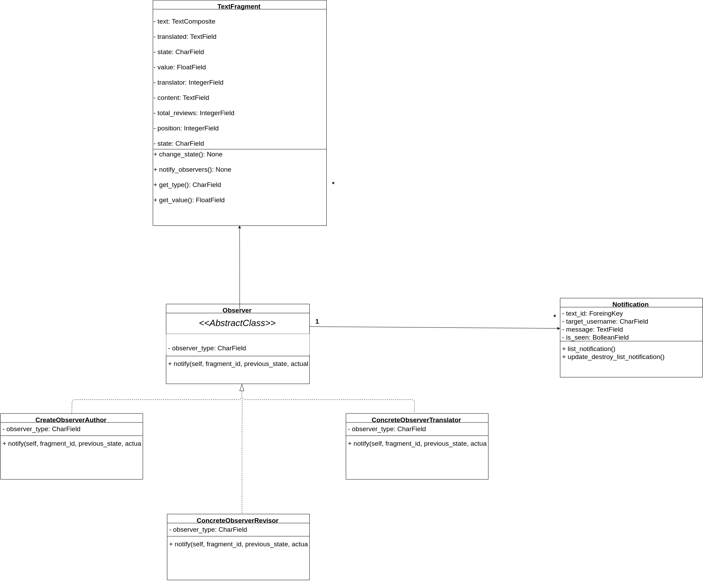
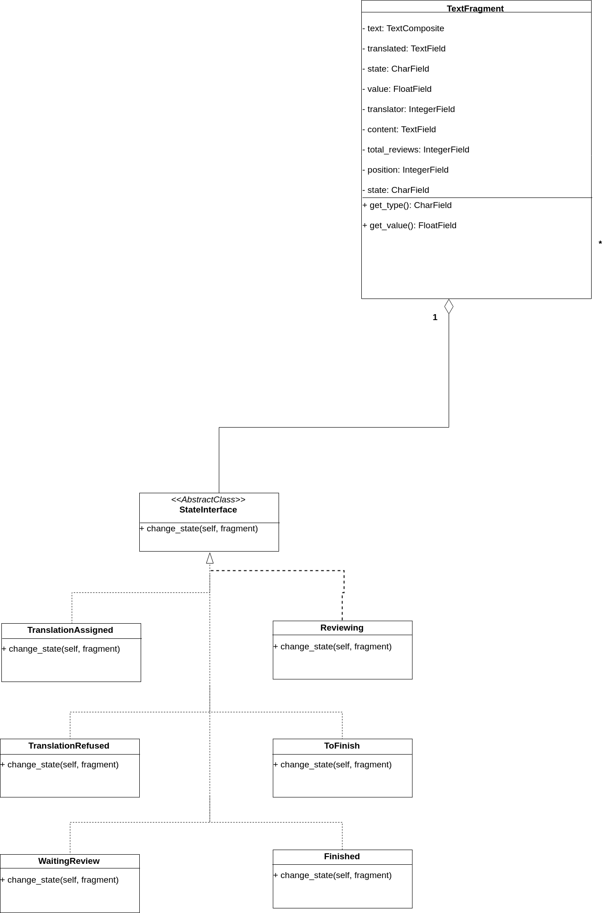
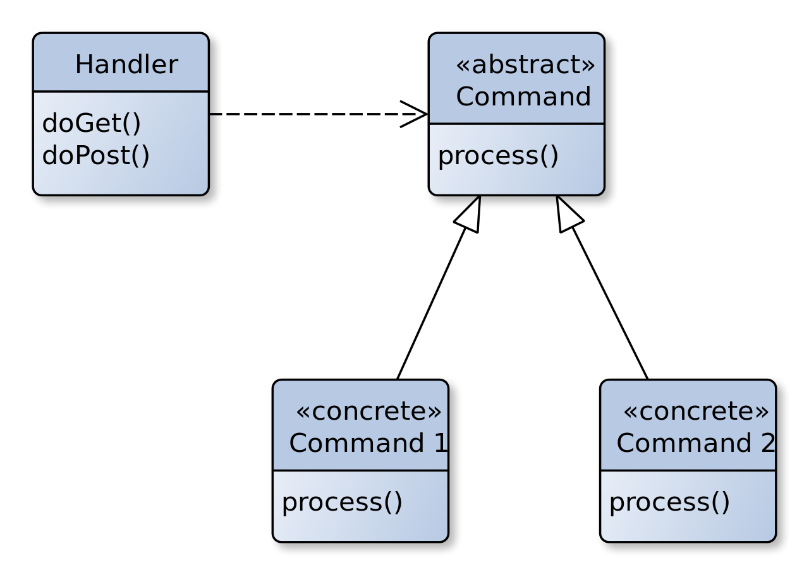

Padrões Utilizados
Histórico de Revisão:
| Data | Versão | Descrição | Autor |
|---|---|---|---|
| 30/06/2019 | 0.1 | Adicionando definição dos padrões utilizados pelo framework | Alexandre Miguel |
| 01/07/2019 | 0.2 | Adicionando tópicos composite e state | Rômulo Souza |
| 01/07/2019 | 0.3 | Adicionando tópico iterator e adapter | Rômulo Souza |
| 01/07/2019 | 0.4 | Adicionando referências | Rômulo Souza |
| 01/07/2019 | 0.5 | Reestruturando a documentação | Alexandre Miguel |
| 01/07/2019 | 0.6 | Adicionando Sequência e Estrutura | Alexandre Miguel e Rômulo Souza |
| 01/07/2019 | 0.7 | Adicionando Diagramas refatorados e descrições de Observer e State | Alexandre Miguel e Letícia Meneses |
Padrões Implementados pelo Grupo
Os seguintes padrões foram implementados no Backend do produto gerado, utilizando o Django REST Framework.
1. Composite
O padrão Composite foi implementado para a criação dos tipos de elementos textuais da aplicação. Para sua implementação, foi criada uma classe abstrata TextComponent (model abstrata no django). Essa classe abstrata foi herdada pelo texto, que é a classe composta do composite e pelos fragmentos, que são as leafs. Atualmente, o único tipo de fragmento utilizado é o de tipo texto. O uso do composite, no entanto, permite que no futuro sejam implementados outros tipos de fragmento com mais facilidade. Além disso, facilita que realizemos operações em cada fragmento na lista de fragmentos, como calcular o valor total e reestruturar o texto traduzido.
1.1. Estrutura
A Aplicação do padrão é fundamentada por uma estrutura, cuja adaptação se fez necessária por conta do uso do Django REST Framework com a implementação das Generics views.
1.1.1. Estrutura Padrão
Estrutura disposta como padrão para implementação do padrão.

1.1.2. Estrutura Implementada
Estrutura implementada no projeto, com a aplicação dos fragments

1.2. Sequência
Os diagramas de sequência foram implementados para visibilidade da sequência realizada em requisições conforme o padrão implementado, em comparação com a sequência do padrão original.
1.2.1. Diagrama de Sequência Padrão

1.2.2. Diagrama de Sequência Implementada

1.3. Código Implementado
Essa seção apresenta os códigos implementados na aplicação.
1.3.1. Classe Abstrata TextComponent
Essa classe define os métodos de retorno de preço e conteúdo, comum a todas as leafs e ao composite

1.3.2. Classe Text (Composite)
Implementação da Classe Text que atua como composite para a aplicação.

1.3.3. Classe TextFragment (Leaf)
IMplementação da classe TextFragment com os métodos sobrescritos e a conexão poor meio de chave estrangeira com o Composite na classe Text

2. Iterator
O padrão Iterator permite a travessia de todos os fragmentos presente no texto. Tendo em vista que foi utilizado o composite, é feita a iteração em elementos do tipo TextComponent , possibilitando que seja iterado diferentes tipos de fragmentos. No python, o iterator é realizado automaticamente ao se utilizar:

No projeto, foi implementada uma classe iterator, para demonstrar o que ocorre por trás do iterator padrão do python.
2.1. Estrutura
2.1.1. Estrutura Padrão

2.1.2. Estrutura Implementada

2.2. Sequência
Os diagramas de sequência foram implementados para visibilidade da sequência realizada em requisições conforme o padrão implementado, em comparação com a sequência do padrão original.
2.2.1. Diagrama de Sequência Padrão

2.2.2. Diagrama de Sequência Implementada

2.3. Código Implementado
O Código Implementado foi idealizado como uma modificação de uma iteração padrão do próprio python, com classes alteradas para performar a criação de um fragmento de texto de acordo com uma submissão de texto oriunda do front-end.
2.3.1. Classe FragmentIterator
Essa classe implementa o iterator, conforme os métodos padrões do Django para iteração sobre itens, como init , iter e next

2.3.2 Chamado do Iterator
O Iterator é utilizado para salvar os fragmentos criados na função de adicionar um novo texto.

3. Observer
Dada a necessidade de criação de Notificações de acordo com a transição de estados, foi utilizada a implementação de um padrão Observer que identifica a transição de estados de tradução do texto, permitindo comportamentos diferentes para a criação de notificações de acordo com o usuário alvo daquela notificação (como Autores, Tradutores e Revisores). Em uma primeira versão, o padrão foi aplicado individualmente e, em uma versão posterior, seu funcionamento foi associado ao funcionamento do padrão State.
3.1. Estrutura
A Estrutura do padrao Observer presume uma classe cujas alterações são identificadas por uma série de classes que implementam uma classe abstrata. Assim, a estrutura padrão está disposta a seguir, por meio de um exemplo de estrutura obtido dos arquivos de referência.
3.1.1. Estrutura Padrão
Exemplo padrão da estrutura do padrão Observer, conforme estudado e referenciado no arquivo Padrões GoFs Comportamentais.

3.1.2. Estrutura Implementada
É possível notar, pela estrutura implementada, que essa se mantém fiel à estrutura mínima, com a classe abstrata Observer sendo implementada pelas classes ConcreteObserverAuthor, ConcreteObserverTranslator e ConcreteObserverRevisor que são notificadas pela transição do atributo state da classe TextFragment. Cada Observer, por sua vez, herda a função notify que ontém o id do Fragmento que as instancia, o estado atual desse fragmento e o próximo estado, sendo dados suficiente para que cada Observer crie uma notificação conforme o contexto da transição e referenciando o usuário necessário.

3.2. Sequência
O Diagrama de sequência, para esse padrão, permite visualizar não só seu funcionamento mas também como ocorreu sua integração com o padrao State cujo detalhamento ocorrerá no próximo tópico do Documento.
3.2.1. Diagrama de Sequência Padrão
Com o diagrama padrão, ou de estrutura mínima referenciado, é possível perceber que a criação dos objetos Observers ocorrem pelo cliente, de forma que esses objetos são adicionados a um vetor ou outra estrutura de dado que permita uma iteração para a notificação desses elementos.

3.2.2. Diagrama de Sequência Adaptado
Para a adaptação ao Django REST Framework bem como ao uso das extensões da classe generics, foi necessário que o próprio subject, ou no caso a instância da classe TextFragment, criasse a lista de observers através da função notify_observers, que instancia esses elementos e ativa, de maneira iterada, a função notify de cada um desses elementos, que por sua vez cria uma notificação conforme a necessidade da transição de estados e o usuário cuja notificação se destina.

3.3. Código Implementado
O Código implementado demonstra o que foi referenciado, como as chamadas de funções que levam à notificação dos observers para uso do padrão.
3.3.1 Código Interface Observer

3.3.2 Código Interface ConcreteObserverAuthor

3.3.3 Código Interface ConcreteObserverTranslator

3.3.4 Código Interface ConcreteObserverRevisor

3.3.5 Código de Chamada dos Observers na TextFragment

4. State
O padrão State foi implementado para facilitar as mudanças de estados dos fragmentos. O fragmento possui um método que instancia as classes concretas do State, e chama o método de mudança de estado dentro destas, para o fragmento. Quando é chamado o método de mudança de estado, em cada classe concreta do State, há a referência do estado anterior e qual o próximo estado que o fragmento deve ir, além de chamar as notificações correspondentes à mudança de estado para os usuários.
4.1 Estado
O Seguinte diagrama representa os estados de um fragmento de texto na aplicação, que vai de um estado inicial, aguardando ser selecinado por um tradutor, depois para o estado em que está sendo traduzido, prosseguindo para o estado em que aguarda por uma revisão, o estado em que é revisado e o estado pronto, em que aguarda os demais fragmentos atingirem esse estado para finalização, por vez, da tradução do texto.

4.2. Estrutura
A Estrutura padrão do método State faz denotar a necessidade de uma transição de estados do fragmento da tradução na aplicação, conforme a motivação de implementação do padrão em sua forma mais generalista.
4.2.2. Estrutura Padrão
A Estrutura mais comum do padrão faz uso de classes concretas que herdam de uma interface que implementa as formas com que as transições de um estado serão feitas, o que é aplicado a um contexto representado por outra classe.

4.2.3. Estrutura Implementada
A Estrutura implementada de fato segue, de muitas formas a estrutura padrão, porém contemplando os possíveis estados do fragmento na plataforma, sendo que cada instância de estado é realizada por objetos da classe TextFragment.

4.3. Sequência
As divergências maiores ocorreram na implementação da sequência com que esse padrão é normalmente aplicado e a forma como, efetivamente, foi implementado na aplicação, contemplando a estrutura de classes necessára ao utilizar uma estratégia embasada pelo uso de generics.
4.3.1. Diagrama de Sequência Padrão
O Diagrama de sequência padrão reflete as transições de estados que refletem o elemento context a partir de uma requisição externa inicial, surgindo do cliente, que define o primeiro estado instânciado, permitidno ainda que um estado defina o próximo estado ao qual o elemento Context será associado.

4.3.2. Diagrama de Sequência Adaptado
A Alteração da sequência estabelecida em relação ao modelo padrão se dá principalmente pelo fato de que o próprio elemento State define as demais instâncias, sendo responsável pelo prosseguimento dos estados da aplicação e, além disso, foi incubido a esse padrão a responsabilidade de notificar o context, representado pela instância da classe TextFragment a respeito da notificação dos elementos observers, dado que esses elementos estão sujeitos à alteração do atributo state, que grava um dado a respeito do estado em que aquele fragmento se encontra. Essa solução foi necessára devido à impossibilidade de salvar os elementos state no banco, sendo necessário sua implementação em tempo de execução.
4.4. Código Implementado
4.4.1 Classe Abstrata StateInterface e Classes Concretas


4.4.2. Função change_state na Classe TextFragment

5. Front Controller
5.1. Estrutura
5.1.1. Estrutura Padrão

5.2. Sequência
5.2.1. Diagrama de Sequência Padrão

5.3. Código Implementado

Padrões Implementados pelo Django REST Framework
Adapter
A serializer do Django REST Framework pode ser considerada como um exemplo do padrão Adapter. A serializer transforma um objeto do tipo JSON em um objeto do tipo Model do django, e vice-versa, permitindo a comunicação com o banco de dados através de diferentes interfaces.
Referências
- Padrão Observer
- Guru Design Patterns
- Padrão Iterator
- Documentação em Java de Front Controller
- Padrão State
- RAVINDRAN, A. Django Design Patters and Best Practices. Livery Place, 35 Livery Street, Birmingham B3 2PB - UK: Packt Publishing Ltd., 2015.